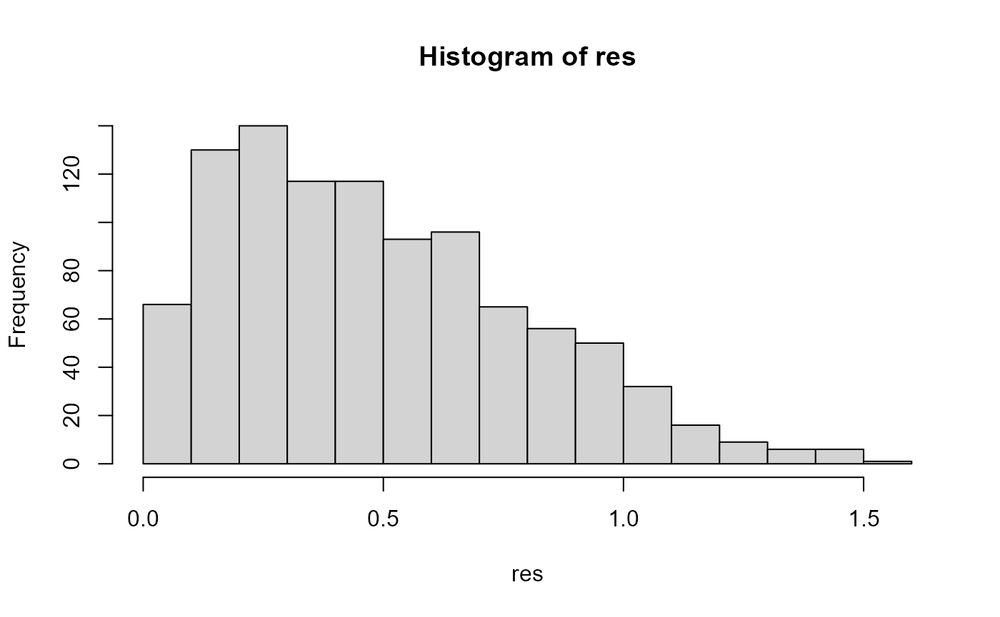

vignettes/probability-sensitivity-analysis.Rmd
probability-sensitivity-analysis.RmdPSA is a core part of any cost-effectiveness analysis (Briggs et al. 2012). Here we will carry this out for a simple decision tree. This involves repeatedly sampling from a distribution for each branch probability and cost and calculating the total expected value for each set of realisations.
library(CEdecisiontree, quietly = TRUE) library(assertthat, quietly = TRUE) library(treeSimR, quietly = TRUE) library(tibble, quietly = TRUE) library(tidyverse, quietly = TRUE) library(purrr, quietly = TRUE)
We first define the decision tree. The difference to previous trees is that we now use the list-column feature to define distributions rather than point values.
tree_dat <- list(child = list("1" = c(2, 3), "2" = NULL, "3" = NULL), dat = tibble(node = 1:3, prob = list( NA_real_, list(distn = "unif", params = c(min = 0, max = 1)), list(distn = "unif", params = c(min = 0, max = 1))), vals = list( 0L, list(distn = "unif", params = c(min = 0, max = 1)), list(distn = "unif", params = c(min = 0, max = 1)))))
We can now loop over this tree and generate samples of values for the given distributions. We use the sample_distributions() function from my treeSimR package.
tree_dat_sa <- list() for (i in 1:1000) { tree_dat_sa[[i]] <- define_model( tree_dat = list(child = tree_dat$child, dat = data.frame( node = tree_dat$dat$node, prob = lapply(tree_dat$dat$prob, sample_distributions) %>% unlist(), vals = lapply(tree_dat$dat$vals, sample_distributions) %>% unlist()) )) }
This results in a list of trees.
head(tree_dat_sa, 2) #> [[1]] #> $child #> $child$`1` #> [1] 2 3 #> #> $child$`2` #> NULL #> #> $child$`3` #> NULL #> #> #> $dat #> node prob vals #> 1 1 NA 0.0000000 #> 2 2 0.6096400 0.8114496 #> 3 3 0.3675445 0.4151990 #> #> attr(,"class") #> [1] "tree_dat" "list" #> #> [[2]] #> $child #> $child$`1` #> [1] 2 3 #> #> $child$`2` #> NULL #> #> $child$`3` #> NULL #> #> #> $dat #> node prob vals #> 1 1 NA 0.0000000 #> 2 2 0.38412492 0.3536940 #> 3 3 0.02022573 0.4551417 #> #> attr(,"class") #> [1] "tree_dat" "list"
Now it is straightforward to map over each of these trees to obtain the total expected values
res <- map_dbl(tree_dat_sa, dectree_expected_values) head(res) #> [1] 0.6472963 0.1450682 0.5484781 1.0962329 0.9833080 0.8944215 hist(res, breaks = 20)
